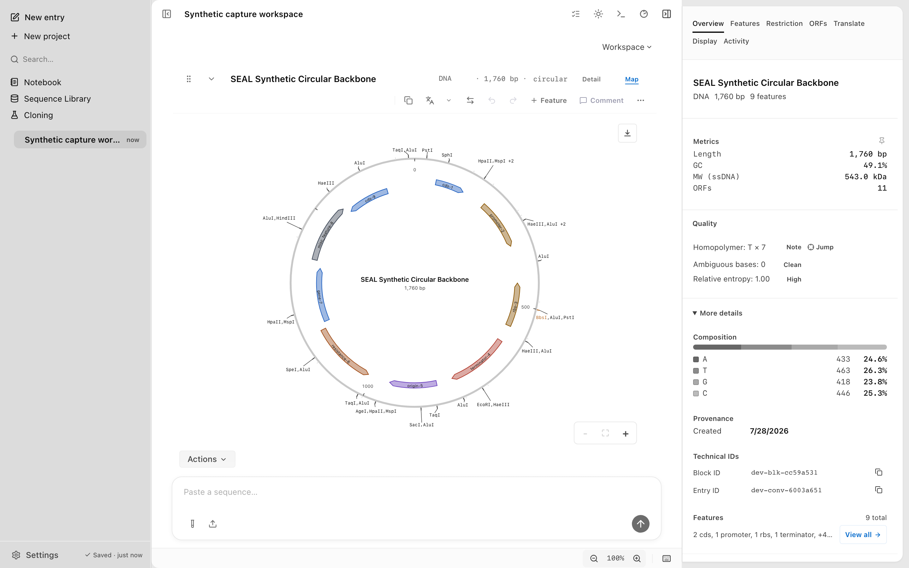
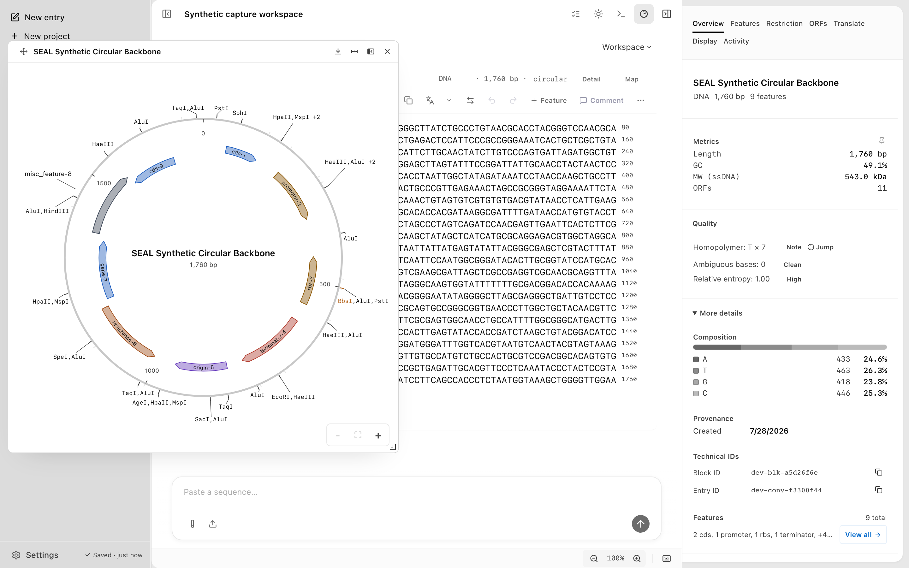

Plasmid maps
Screenshots and recordings show the direct edition. Compare editions.
Every DNA, RNA, and protein block can open as a circular or linear sequence map. Features draw on concentric lanes, restriction sites tick the backbone, and a movable dock can hold the map beside the inspector.
Anatomy of the circular map
Open a map
Click Map in a block's header to switch between the sequence and a map-only view. Open the arrow beside it to choose Map only, Map above sequence, Map below sequence, or Open floating map. When an embedded map is active, the same menu can hide it.
DNA and RNA blocks follow their topology: a circular molecule draws as a ring, a linear molecule as a horizontal map. Protein blocks always draw as a linear map, and the ruler counts residues (aa) instead of base pairs.
The Sample Lab uses all three forms without making every record heavy: SEAL Demo Plasmid starts with a circular map linked above its DNA, SEAL Synthetic Genomic Region (30 kb) starts with a linear DNA map above the sequence, and Synthetic Modular Peptide Model starts with a linear protein map below the residues. Other samples keep the standard sequence view. Offscreen linked maps show a lightweight ready state and mount the interactive renderer only when they approach the viewport or you click to load them.


The map is a view, not an editor. It reads the block and writes only transient selection state. It never touches sequence data, files, or checkpoints.
Read the map
A circular map reads from the outside in. Restriction ticks and enzyme names sit outside the backbone ring. Just inside the ring, a coordinate ruler marks base-pair positions. Features stack on concentric lanes further in, and each directional feature ends in an arrowhead that marks its strand. The block name and length sit at the centre.
When features compete for room, the lanes compress to thinner arcs. A feature that still does not fit loses its arc and is counted in a +N more chip, whose tooltip explains what is hidden and points to the Features tab of the inspector. Hidden features stay in the block; only their arcs are dropped.
Every site in the active enzyme set draws a short tick outside the backbone, and that tick stays visible at any density. Sites that fall close together cluster into one interactive tick labelled with up to three enzyme names followed by +N. When even labels run out of room, a +N more sites chip tallies the rest while every tick remains drawn. Type IIS enzymes draw in amber.
The enzyme set is the one chosen in the Restriction tab of the inspector: the Common working set of about 30 enzymes by default, with the full 154-enzyme catalogue, Favorites, named presets, and your own lists as alternatives. The map, the dock, and the inspector all use the same set. Sites are computed for sequences up to 50,000 bp, and longer sequences still show features and the ruler. See Restriction digest for simulating cuts with the same enzymes.
A linear map shows the same lanes, ticks, and ruler along a horizontal axis.
Selection stays in sync
The map, the sequence view, and the inspector share one selection, so it moves in both directions.
- Click a feature on the map and the same bases are selected in the sequence view, which scrolls to show them.
- Click a restriction tick and the exact recognition windows of the sites in that cluster are selected in the sequence.
- Select bases in the sequence view, or pick a feature in the inspector, and the map draws that span as a highlight.
Click empty space on the map to clear the selection.
The map dock
The map dock is a floating panel that hosts the map beside the inspector. Choose Open floating map from a block's Map menu, or use the pop-out control on a linked map. The dock follows the active block: select another block and the dock swaps to its map. With no block selected it asks you to select a sequence.
Drag the header to move the dock anywhere over the workspace. Drag the resize grip to resize it: a circular dock stays square, and a linear dock adjusts its width while fitting its own height. The header buttons export the map as SVG, switch between circular and linear, flip the dock to the other side of the window, and close it. Esc closes the dock too.

The top-bar map button appears in conversation view when the window is wide enough to host a third column.
Zoom and pan
Scroll or pinch over the map to zoom around the pointer. The plus and minus buttons step through the same range, 1x to 8x, and the reset button returns to the full map. Once zoomed in, drag the background to pan.
The circular or linear toggle in the dock header redraws a nucleotide map in the other layout. It changes only the view; the block's stored topology is untouched. Zoom and pan reset when you switch blocks or switch layouts.
Keyboard navigation
Features form one roving tab stop and restriction ticks another, so Tab reaches the map in two stops. The arrow keys move focus across features in genomic order, wrapping from the last feature back to the first on a circular map and stopping at the ends on a linear one. Home and End jump to the first and last feature. Enter or Space selects the focused item, and Esc clears the selection.
The dock's resize grip takes the same arrow keys, with Shift for a larger step. Screen readers announce each feature by name, type, base span, and strand.
Export as SVG
The export button on the map, at the top right of an embedded map and in the header of the dock, downloads a self-contained SVG named after the block, such as pGEN-demo-map.svg. Computed styles are flattened inline and a solid background matching the current theme is baked in, so the file opens correctly in a browser, Illustrator, or Inkscape.
Themes
The map renders in light, dark, and high-contrast themes and follows the app setting. High contrast switches map labels to a monospace font and retunes tick and backbone colours. Change themes in Settings under Appearance, described in Settings and backup.
Turn maps off
Sequence maps and the map dock are both on by default.
To switch them off, open Settings, then Appearance, and find the Sequence maps section. Sequence maps removes the Map button from every block. Movable map dock disables the dock, and applies only while Sequence maps is on. Changes apply immediately, with no reload.